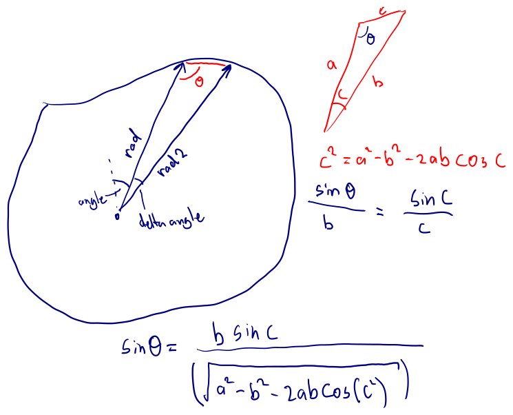

Ship Spawn Points
Currently the ships end up inside the map wherever the physics engine shunts them. For any sort of game they should be placed somewhere - probably behind a start/finish line of some sort.
However, before we can place the ships sanely, let's make the map a sensible size. The function for the map is currently controlled both in the map shader and in the rust implementation of the map. Let's quickly convert the various map control parameters into uniforms:
uniform float track_base_radius;
uniform float track_width;
uniform float sin_consts[8];
uniform float cos_consts[8];
And pass them in from rust:
#![allow(unused)] fn main() { pub fn set_to_map(&mut self, gl: &WebGl2RenderingContext, map: &Map) { gl.use_program(Some(&self.program)); gl.uniform1fv_with_f32_array(self.uniform_sin_consts.as_ref(), &map.sin_consts); gl.uniform1fv_with_f32_array(self.uniform_cos_consts.as_ref(), &map.cos_consts); gl.uniform1f(self.uniform_track_base_radius.as_ref(), map.track_base_radius); gl.uniform1f(self.uniform_track_width.as_ref(), map.track_width); } }
You may notice I have this as a separate function to being part of the
map sprites "render" function, and that it calls gl.use_program. This
is because the state of a shaders uniform don't need to be set every frame
- only when they change. For the ships, all the uniforms need to change
each time it is rendered because the same sprite is used for multiple
ships, but for the map (of which there is only one), it only needs to be
set when the map is "selected". As a result, we can put in our
appstruct a function like:
fn start_game(&mut self) {
self.map_sprite.set_to_map(&self.gl, &self.map);
// TODO: position the ships on the start line
}
Now we can modify the parameters to the map struct, and see it reflected in the map in the shader!
Now that the map is sane enough to "support" a race, let's place a start line. Where is a good place to putting a start line? Well, the most important part is that the start line must face in the same direction as the track.
First up though we need to figure out where the start line should be. Let's place it at angle 0 - the top of the map. This means that the player will always initially travel right. We can then find the Y coordinate of the player by refactoring out the "radius" of the fourier series:
#![allow(unused)] fn main() { pub fn track_radius(&self, angle: f32) -> f32 { let mut track_radius = self.track_base_radius; for i in 0..8 { let omega = (i + 1) as f32; track_radius += f32::sin(angle * omega) * self.sin_consts[i]; track_radius += f32::cos(angle * omega) * self.cos_consts[i]; } track_radius } }
Now we can figure out what angle to place the ships/start line at. Once again, diagrams come in useful:

The two rules used were the sine and cosine rules. The resulting rust function is:
#![allow(unused)] fn main() { // Returns the angle pointing along the track at a particular // polar/angular coordinate along the track pub fn get_track_direction(&self, angle: f32) -> f32 { const DELTA_ANGLE: f32 = 0.01; let radius_here = self.track_radius(angle); let radius_a_bit_further = self.track_radius(angle + DELTA_ANGLE); let delta_radius = radius_here - radius_a_bit_further; // Use cosine rule to find the length of the line joining the // two radius' (chord) let joining_side_length = cosine_rule(radius_here, radius_a_bit_further, DELTA_ANGLE); // Use sin rule to find the angle of the chord and radius_here let ratio = radius_here / joining_side_length * f32::sin(DELTA_ANGLE); let ratio = f32::max(f32::min(ratio, 1.0), -1.0); // Floating point precision let extra_angle = f32::asin(ratio); if delta_radius.is_sign_negative() { - angle - extra_angle } else { - angle + extra_angle + std::f32::consts::PI } } }
Note the differences between theory and implementation:
- Floating point precision means that the sine rule needed to have it's inputs clamped.
- The distance of the chord is an unsigned number, so information
is lost. The sign of the
delta_radiusis used to regain this information
To test this function I animated the starting angle so I could watch a ship "fly" along the center line of the track and visually compare the direction it was moving to the direction it was facing.
Now we can place our four ships along the start line:
#![allow(unused)] fn main() { fn start_game(&mut self) { self.map_sprite.set_to_map(&self.gl, &self.map); { // Position the ships on the start line const SHIP_SPACING: f32 = 0.12; let start_position = self.map.get_start_position(); let startline_angle = self.map.get_track_direction(start_position.angle); let startline_tangent = (f32::cos(startline_angle), f32::sin(startline_angle)); let startline_normal = (-f32::sin(startline_angle), f32::cos(startline_angle)); let num_ships = self.ship_entities.len(); for (id, ship) in self.ship_entities.iter_mut().enumerate() { let offset = ((id as f32) - ((num_ships - 1) as f32) * 0.5); let offset_vec = ( (startline_tangent.0 * offset - startline_normal.0) * SHIP_SPACING, (startline_tangent.1 * offset - startline_normal.1) * SHIP_SPACING, ); let ship_start_position = start_position.to_cartesian(); ship.position.x = ship_start_position.0 + offset_vec.0; ship.position.y = ship_start_position.1 + offset_vec.1; ship.position.rot = startline_angle; ship.velocity.x = 0.0; ship.velocity.y = 0.0; ship.velocity.rot = 0.0; } } } }
Note that we use the normal of the startline to offset the ships behind the startline slightly.
As a final act, we need to display the startline to the player. We can add a new function to our map fragment shader:
uniform vec2 start_line_tangent;
uniform vec2 start_line_position;
<< snip >>
float startline(vec2 world_coordinates) {
vec2 delta = world_coordinates - start_line_position;
float projected_dist = dot(delta, start_line_tangent);
vec2 start_line_coords = delta - projected_dist * start_line_tangent;
float dist_from_line = length(start_line_coords);
float dist_from_center = projected_dist;
float start_line_ends = - 1.0 + abs(dist_from_center);
float start_line = max(dist_from_line, start_line_ends);
return start_line + track_background_line_fade;
}
<< snip >>
void main() {
float track = map_function(uv);
float edge_sdf = map_edges(track);
float map_visualized = edge_sdf;
if (track > 0.0) {
float background_grid = background_grid(uv);
map_visualized = min(edge_sdf, background_grid);
} else {
float startline_sdf = startline(uv);
map_visualized = min(edge_sdf, startline_sdf);
}
FragColor = neon(
map_visualized,
vec4(0.9, 0.9, 0.9, 1.0), 0.1
);
}
Note that in the startline function there is the variable
"start_line_ends" this is used to prevent the startline from continuing
across to the other side of the map (the max function is like a
modeling "intersection" operation).
And the result of all this is: